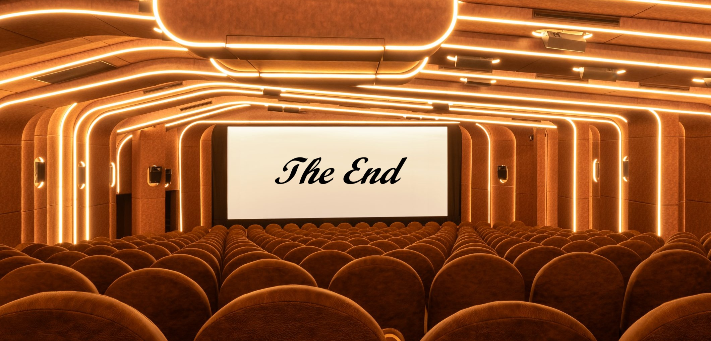
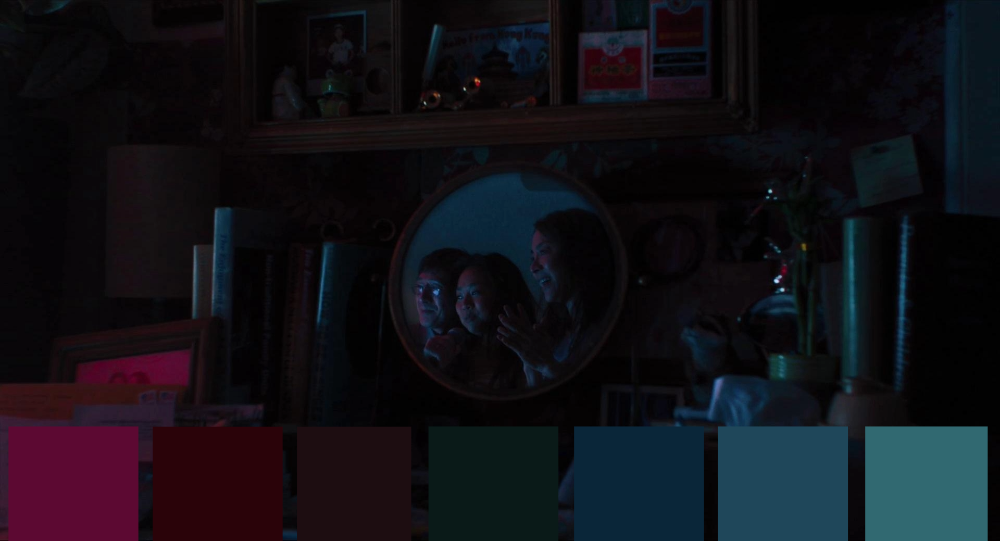
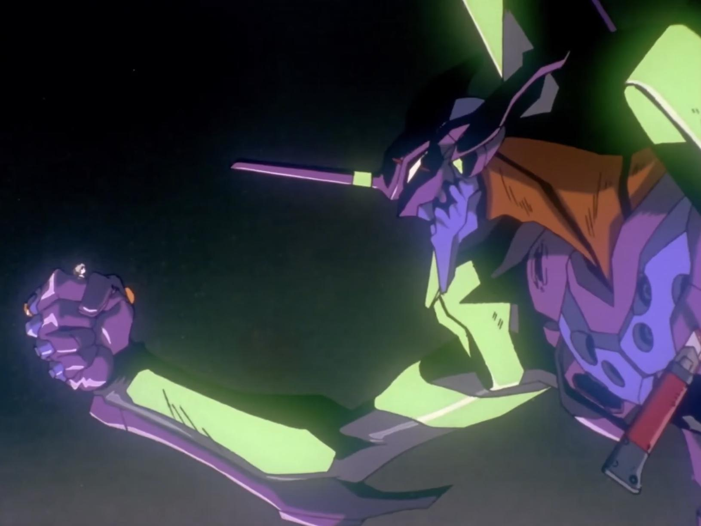

Étudiant en Sciences des Données et Arts (Université PSL & Lycée Louis Le Grand), je combine la grande rigueur des mathématiques et de l'algorithmique avec une solide sensibilité aux humanités numériques et à l'analyse culturelle.

Régression LASSO et Réseau de Neurones pour estimer la durée en minutes d'un film en fonction de son budget et de son genre.

Prédiction de la couleur dominante d'une affiche à partir des métadonnées d'un film pour analyser les choix artistiques des studios.

Analyse statistique : les séries d'animation japonaises les mieux notées par le public sont-elles statistiquement les plus violentes ?
Toujours curieux de relever de nouveaux défis, je suis ouvert aux opportunités d'études en Master, ainsi qu'aux collaborations stimulantes avec des entreprises ou laboratoires de recherche.